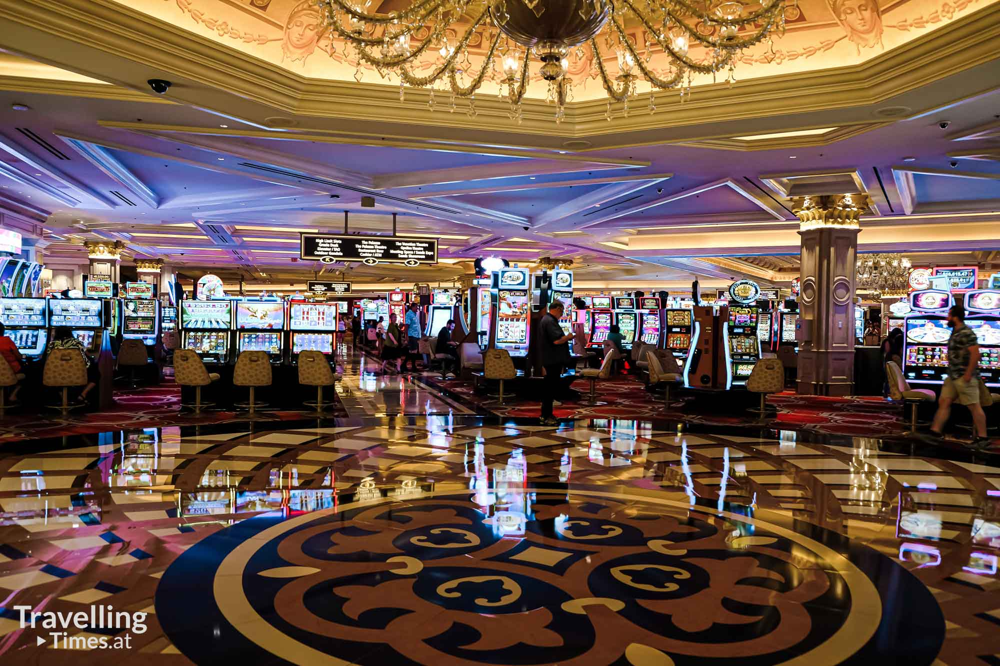
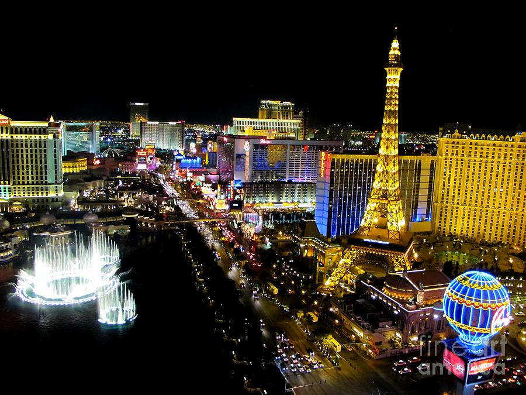
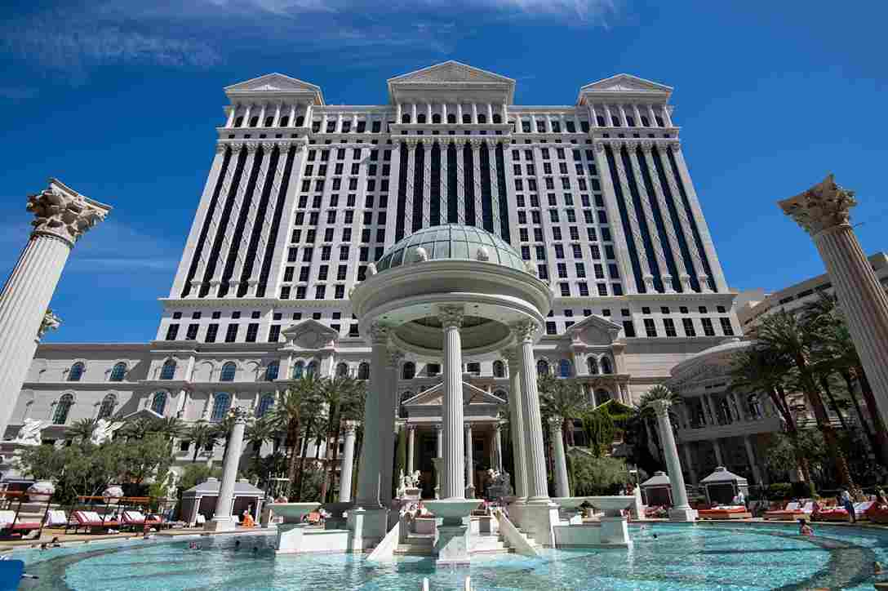
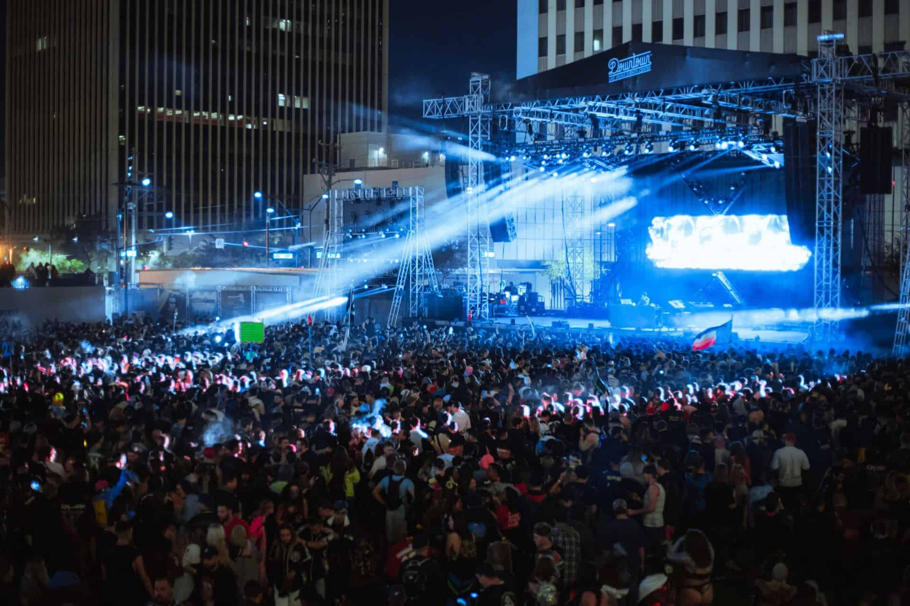
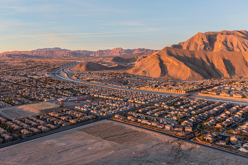
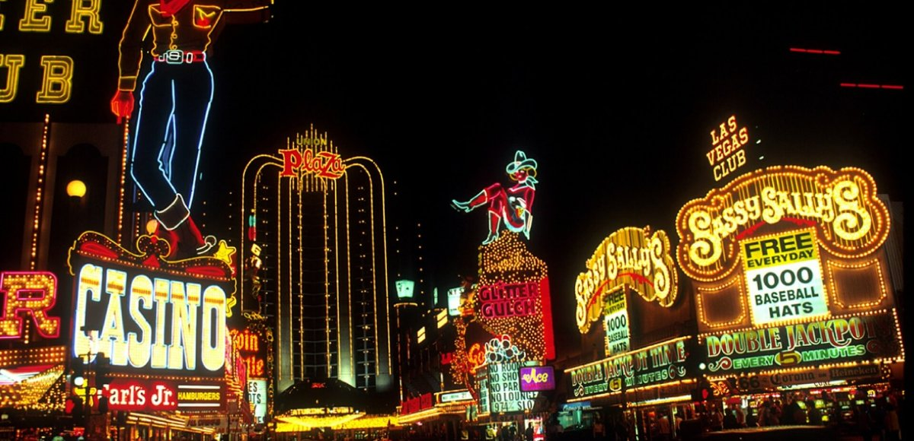

Las Vegas ist weltweit vorallem für seine Casinos bekannt.
READ MORE
Fast die ganze Stadt ist auch in der ganzen Nacht voller Lichter und Leben.
READ MORE
Viele der Hotels in Las Vegas sind selst Sehenwürdigkeiten, aufgrund ihrer speziellen Architektur.
READ MORE
Genauseo wie Casinos tummeln sich auch eine ganze Menge von Clubs in den Straßen von Las Vegas. Auch zahlreiche Konzerte und Shows kann man dort bewundern.
READ MORE
Sofort am Ende der Stadt beginnt eine völlig andere Landschaft der Mojave-Wüste mit Tälern und Bergen.
READ MORE
Vile Leuchtreklame, spektakuläre Fassaden und natürlich The Squere gehören zum Erscheinungsbild von Las Vegas.
READ MORE